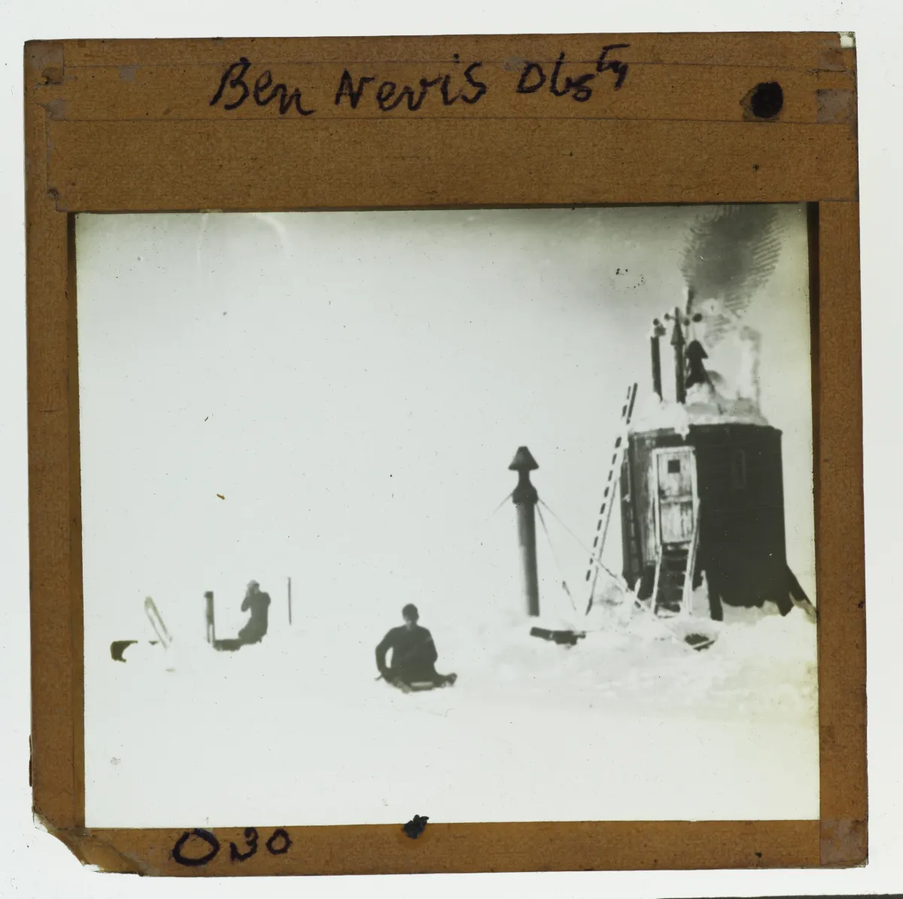

The Crucible of the Mountain
Clement Lindley Wragge was a man built like the very atmospheric systems he sought to understand: tall, thin, possessing an iron constitution, a mop of flaming red hair, and an explosive temper to match. Orphaned in infancy and raised by a grandmother who gently tuned his early sight to the basics of cosmology, he spent his youth fleeing the mundane confines of an unfinished law degree to chase the edges of the earth.
By the early 1880s, his wanderlust crystallised into a gruelling, daily courtship with the sublime.
Volunteering for the Scottish Meteorological Society when funding collapsed, Wragge became the solitary anchor of the Ben Nevis Observatory. Every single day, through the blinding fury of Atlantic gales, torrential rain, and choking snowdrifts, he made a frantic 22.5 kilometre ascent on foot up the rugged, trackless rock of the mountain. He operated on a strict, seconds-accurate schedule, braving two-hour exposures at the summit without shelter.
His hands routinely grew so numbed and swollen, and his logbooks so saturated with moisture, that he could barely handle his instruments.
⟶
Yet, this was not merely scientific devotion; it was an initiation into the terrifyingly beautiful forces of a living universe. It was here, suspended in the shrouding cloud-fog, that he earned his moniker: The Weather Prophet.
 Wragge recording meteorological data amidst the rocky void of Ben Nevis summit.
Wragge recording meteorological data amidst the rocky void of Ben Nevis summit.

Archival slide: Ben Nevis Observatory winter station under heavy snow.